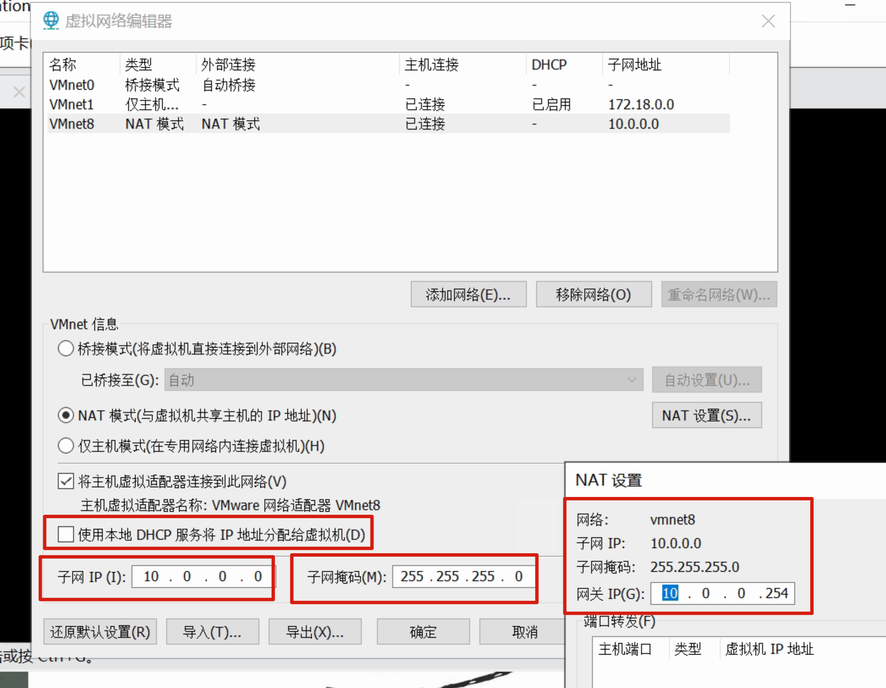
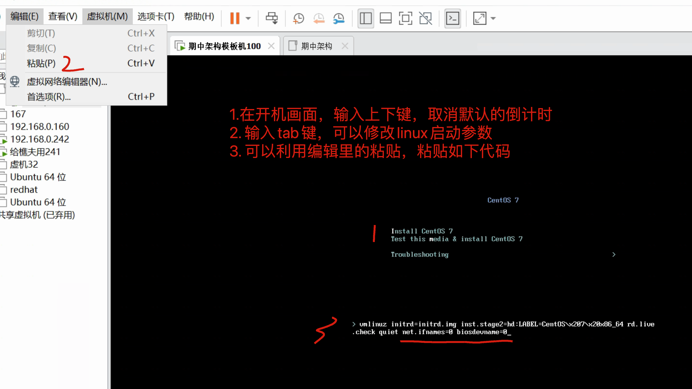
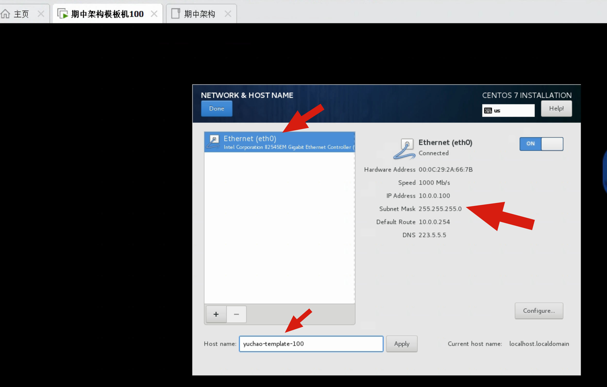
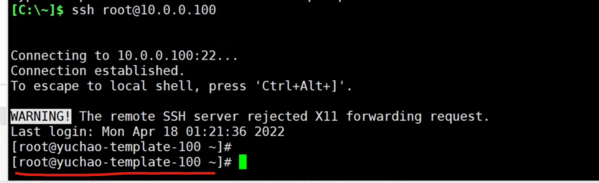
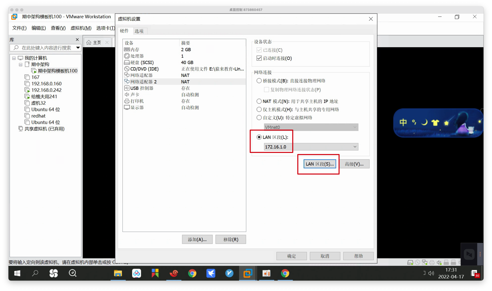
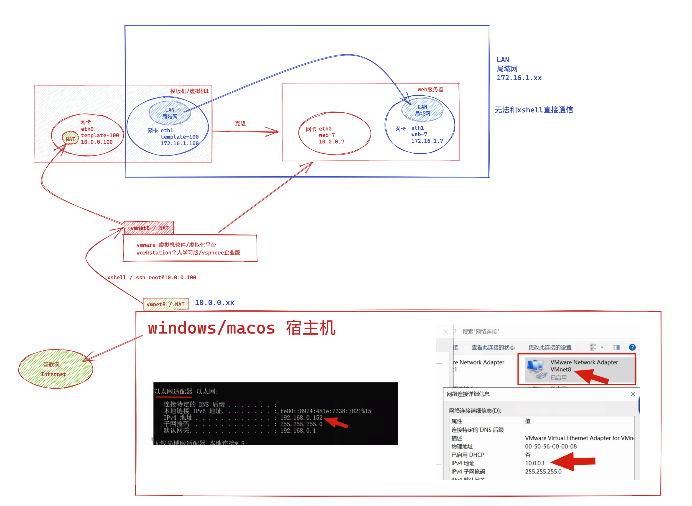
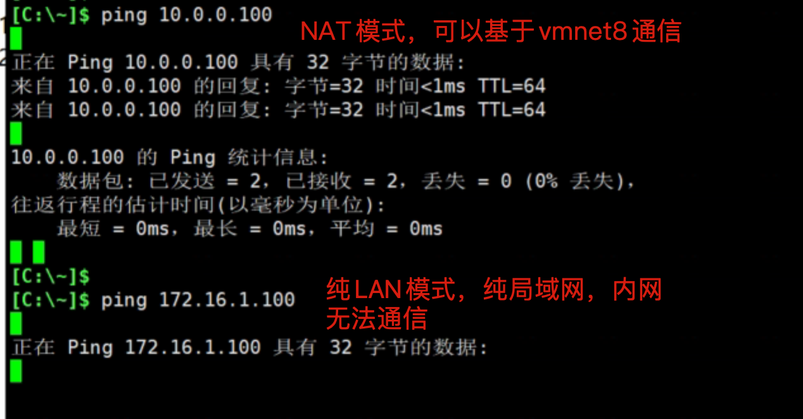
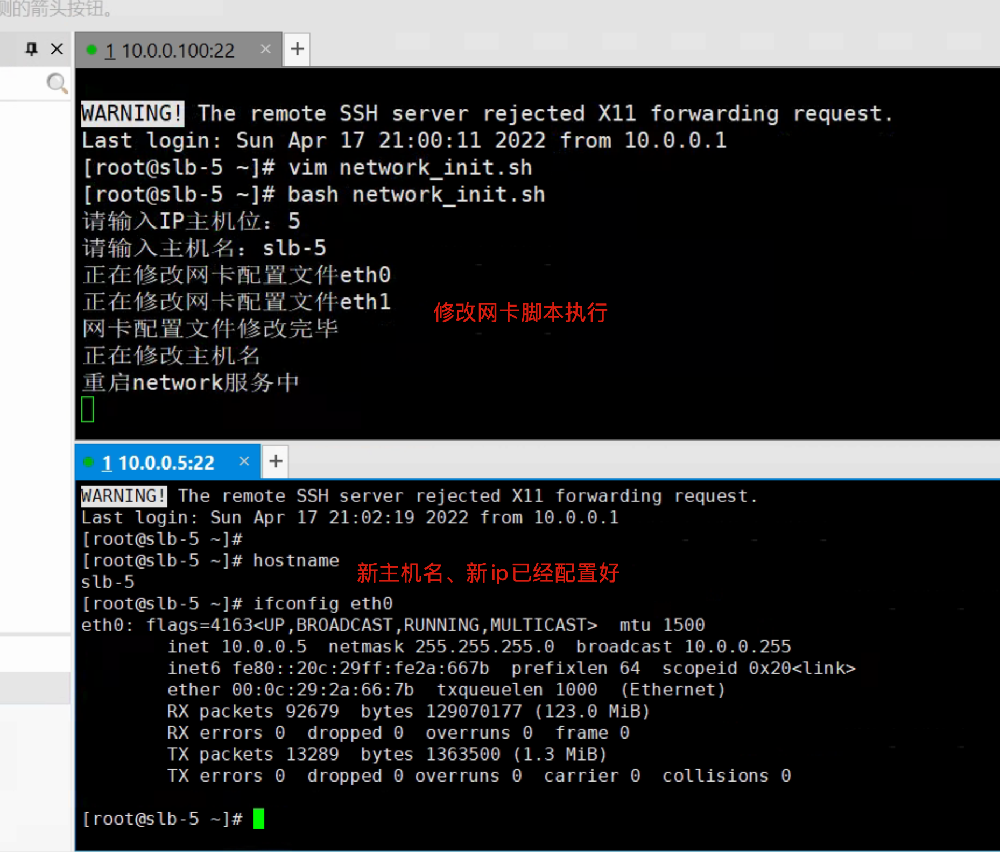
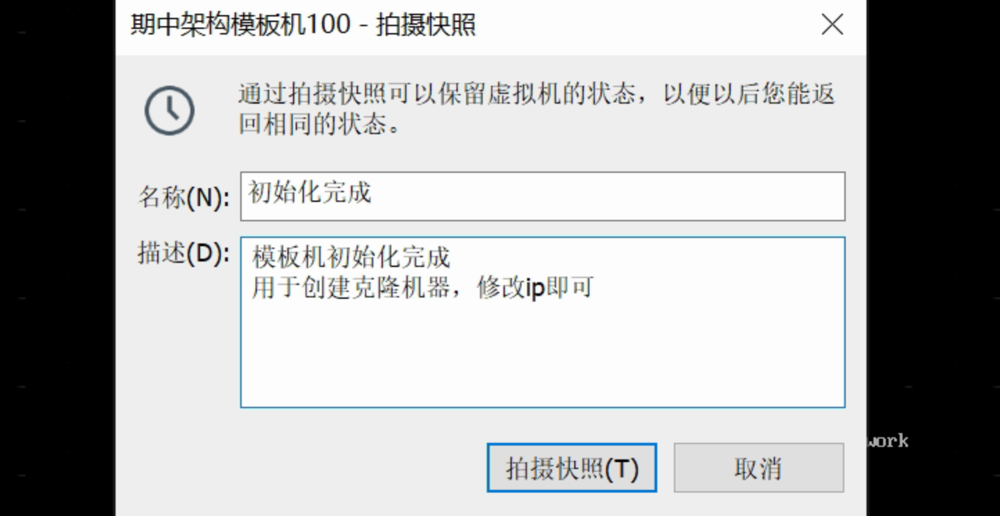

02-综合架构环境准备
架构图中的服务组件
1.用户、顾客（浏览器）
访问网站的用户请求
2.防火墙、保安（iptables）
设定防火墙策略、防火墙规则，请求的进入、响应的出口，针对ip、port的流量控制
3.负载均衡服务器、迎宾服务员（nginx）
对用户的请求进行调度、纷发
4.web服务器，点餐前台服务员（nginx）
接收用户请求、处理、响应用户请求，返回服务器资料
5.数据库服务器、厨房后厨仓库（mysql）
存储网站的动态数据、提供读写数据功能
6.存储服务器、粮仓仓库（nfs）
存储图片、音频、视频、各种附件等容量较大的静态资源
7.备份服务器、粮仓仓库二号（rsync+crond定时备份、rsync+inotify实时备份）
二次备份所有数据，存储图片、音频、视频、各种附件等容量较大的静态资源
8.缓存服务器、自助取餐（redis）
数据存储在内存里，提供内存的高速数据读写
以及减轻mysql服务器的读写压力
9.ansible服务器、调度总台（ansible）
批量化管理所有的服务器
服务器环境规划
机器数量
整套架构，理论上需要9台虚拟机
但是你不用担心机器扛不住，这个只有在最后的整体架构演练时，需要全部开启
前期学哪一块就开启哪一块的机器即可
建议、提前按照如下表格，创建9台服务器（vmware虚拟机）。
1.前提你跟着超哥学习的那个虚拟机就放着一旁吧，因为你已经改的面目全非了，请重新安装；
2.机器初始化后，记得做好快照
服务器作用 主机名 外网地址 内网地址 运行软件
管理机 master-61 10.0.0.61 172.16.1.61 Ansible/zabbix/jumpserver/openvpn
负载均衡服务器 slb-5 10.0.0.5 172.16.1.5 nginx/keepalived
负载均衡服务器 slb-6 10.0.0.6 172.16.1.6 nginx/keepalived
web服务器 web-7 10.0.0.7 172.16.1.7 nginx/php
web服务器 web-8 10.0.0.8 172.16.1.8 nginx/tomcat
web服务器 web-9 10.0.0.9 172.16.1.9 nginx/php
存储服务器 nfs-31 10.0.0.31 172.16.1.31 nfs/rsyncd/lsyncd
备份服务器 rsync-41 10.0.0.41 172.16.1.41 nfs/rsyncd/lsyncd
数据库服务器 db-51 10.0.0.51 172.16.1.51 mysql/redis
注意去理解架构图，生产环境下、只有最外层的负载均衡设备，才能对接到公网流量，因此需要配置公网ip地址；
其他功能的服务器，只需要单网卡，内网IP即可；
外网地址
- 模拟互联网的公网ip
- 你可以直接使用windows，ping通该地址，（xshell）ssh连接该地址（服务器）
内网地址
- 模拟服务器的内网，局域网环境
- 无法直接通过xshell连接该服务器
配置规划
系统 centos7
内存 至少2G/1c
网卡
eth0，使用NAT、模拟外网环境 ，网段是10.0.0.xx，网关10.0.0.254
eth1，使用LAN区段，模拟内网环境，网段是172.16.1.xx，网关172.16.1.254
硬盘容量，40G
综合架构实践
超哥踩坑提醒
1.关闭你之前旧的所有虚拟机，甚至删除也行，别开机，因为你之前修改过网络设置
2.你这里要修改新的网络设置，需要修改vmware的虚拟网络编辑器（实测要关闭dhcp功能，反正我们都是用静态ip）

1.创建新虚拟机（模板机）
系统 centos7
内存 至少2G/1c（特殊情况，给1c/1g也够了）
网卡
eth0，使用NAT、模拟外网环境 ，网段是10.0.0.xx
eth1，使用LAN区段，模拟内网环境，网段是172.16.1.xx
硬盘容量，40G
2.安装centos7
1.进入内核选择界面时，按上下方向键，取消自动选择
2.输入tab键，复制粘贴进去如下代码
net.ifnames=0 biosdevname=0
3.输入回车，启动
4.请注意，必须是英文，以后再也别用中文了，因为你要看日志
5.只需要修改亚洲上海时区,其他全部默认
6.网络设置、修改静态ip地址、设置主机名
模板机，主机名 yuchao-template-100
ip，10.0.0.100
网关，10.0.0.254

网络配置

3.登录该机器
ssh root@10.0.0.100

4.再添加另一块网卡（充当内网环境的网卡）
注意，你的LAN网段，添加的是172.16.1.0

提示，常见的LAN和WAN是什么？
WAN接口，也就是广域网（WAN，Wide Area Network）的缩写，也称之为远程网（long haul network ）。
而LAN接口，也就是局域网（Local Area Network，LAN）的缩写，它是指在某一区域内由多台计算机互联成的计算机组。
3.图解双网卡的配置

4.简化网卡配置文件
友情提醒，sed是一个双刃剑
用好了、高效修改配置文件
用坏了，可能不小心会清空你的配置文件
所以自己看着来，细心是第一位，做好备份是第一位
1.删除网卡配置文件中关于ipv4、ipv6的行
[root@yuchao-template-100 ~]# sed -i '/ipv[46]/Id' /etc/sysconfig/network-scripts/ifcfg-eth0
2.再删除如下四行
proxy_method
browser_only
defroute
uuid
sed -r -i '/(proxy_method|browser_only|uuid|defroute)/Id' /etc/sysconfig/network-scripts/ifcfg-eth0
3.上述俩语句，你也可以一行搞定
确保最终的配置如下，和我一样即可
[root@yuchao-template-100 network-scripts]# sed -ri '/(proxy_method|browser_only|uuid|defroute)/Id' /etc/sysconfig/network-scripts/ifcfg-eth0
[root@yuchao-template-100 network-scripts]#
[root@yuchao-template-100 network-scripts]# cat ifcfg-eth0
TYPE=Ethernet
BOOTPROTO=none
NAME=eth0
DEVICE=eth0
ONBOOT=yes
IPADDR=10.0.0.100
PREFIX=24
GATEWAY=10.0.0.254
DNS1=223.5.5.5
4.如果你不这么做，你后续克隆虚拟机，会导致无法上网，必须要删除网卡配置文件的uuid
而且如果你对sed理解不够，你可以直接复制于超老师的这个网卡信息（你能对自己这么低的要求吗？不能！）
还得编辑eth1内网网卡配置文件
务必看清楚了网卡配置文件
务必看清楚了网卡配置文件
务必看清楚了网卡配置文件
[root@yuchao-template-100 network-scripts]# sed -r -e 's#eth0#eth1#g' -e 's#10.0.0.100#172.16.1.100#g' -e 's#10.0.0.254#172.16.1.254#g' ifcfg-eth0 >ifcfg-eth1
[root@yuchao-template-100 network-scripts]# cat ifcfg-eth1
TYPE=Ethernet
BOOTPROTO=none
NAME=eth1
DEVICE=eth1
ONBOOT=yes
IPADDR=172.16.1.100
PREFIX=24
如果sed用的不熟，实在不行，vim去手动改也一样
最后重启网络服务，确保ip正常
[root@yuchao-template-100 network-scripts]# systemctl restart network
[root@yuchao-template-100 network-scripts]# ip addr show |grep -E 'eth0|eth1'
2: eth0: <BROADCAST,MULTICAST,UP,LOWER_UP> mtu 1500 qdisc pfifo_fast state UP group default qlen 1000
inet 10.0.0.100/24 brd 10.0.0.255 scope global noprefixroute eth0
3: eth1: <BROADCAST,MULTICAST,UP,LOWER_UP> mtu 1500 qdisc pfifo_fast state UP group default qlen 1000
inet 172.16.1.100/24 brd 172.16.1.255 scope global noprefixroute eth1
最后用你的windows、验证这两块网卡

5.系统初始化优化
关闭防火墙、selinux
[root@yuchao-template-100 ~]# systemctl stop firewalld NetworkManager
[root@yuchao-template-100 ~]# systemctl disable firewalld NetworkManager
[root@yuchao-template-100 ~]# sed -i '/^SELINUX=/c SELINUX=disabled' /etc/selinux/config
[root@yuchao-template-100 ~]# grep -i 'selinux=' /etc/selinux/config
# SELINUX= can take one of these three values:
SELINUX=disabled
[root@yuchao-template-100 ~]# setenforce 0
[root@yuchao-template-100 ~]# getenforce
Permissive
[root@yuchao-template-100 ~]# iptables -F
[root@yuchao-template-100 ~]# iptables -X
[root@yuchao-template-100 ~]# iptables -Z
最后检查
[root@yuchao-template-100 ~]# iptables -L
[root@yuchao-template-100 ~]# systemctl is-enabled firewalld NetworkManager
disabled
disabled
加速ssh连接
修改如下2个参数
[root@yuchao-template-100 yum.repos.d]# grep -Ei '^(usedns|gssapiauth)' /etc/ssh/sshd_config
GSSAPIAuthentication no
UseDNS no
[root@yuchao-template-100 yum.repos.d]# systemctl restart sshd.service
优化PS1变量
export PS1="[\[\e[34;1m\]\u@\[\e[0m\]\[\e[32;1m\]\H\[\e[0m\] \[\e[31;1m\]\w\[\e[0m\]]\\$"
yum源优化
1.备份旧的默认repo
[root@yuchao-template-100 ~]# cd /etc/yum.repos.d/
[root@yuchao-template-100 yum.repos.d]# mkdir bakrepo
[root@yuchao-template-100 yum.repos.d]# mv *.repo bakrepo/
2.下载新的repo
wget -O /etc/yum.repos.d/CentOS-Base.repo https://mirrors.aliyun.com/repo/Centos-7.repo
wget -O /etc/yum.repos.d/epel.repo http://mirrors.aliyun.com/repo/epel-7.repo
yum clean all
安装基础软件
yum install -y tree wget bash-completion bash-completion-extras lrzsz net-tools sysstat iotop iftop htop unzip telnet ntpdate lsof
关闭邮件告警
[root@yuchao-template-100 ~]# echo 'unset mailcheck' >> /etc/profile
[root@yuchao-template-100 ~]# source /etc/profile
配置hosts解析
cat > /etc/hosts <<EOF
# 外网地址 内网地址 主机名
10.0.0.61 172.16.1.61 master-61
10.0.0.5 172.16.1.5 slb-5
10.0.0.6 172.16.1.6 slb-6
10.0.0.7 172.16.1.7 web-7
10.0.0.8 172.16.1.8 web-8
10.0.0.9 172.16.1.9 web-9
10.0.0.31 172.16.1.31 nfs-31
10.0.0.41 172.16.1.41 rsync-41
10.0.0.51 172.16.1.51 db-51
EOF
时间同步
* * * * * /usr/sbin/ntpdate time1.aliyun.com > /dev/null 2>&1
关闭swap
[root@yuchao-template-100 ~]# swapoff -a
[root@yuchao-template-100 ~]# free -m
total used free shared buff/cache available
Mem: 1982 97 1409 9 475 1699
Swap: 0 0 0
[root@yuchao-template-100 ~]#
[root@yuchao-template-100 ~]# vim /etc/fstab
[root@yuchao-template-100 ~]# cat /etc/fstab
#
# /etc/fstab
# Created by anaconda on Mon Apr 18 01:03:08 2022
#
# Accessible filesystems, by reference, are maintained under '/dev/disk'
# See man pages fstab(5), findfs(8), mount(8) and/or blkid(8) for more info
#
/dev/mapper/centos-root / xfs defaults 0 0
UUID=16dbd4b1-60b3-4770-b20a-4d0b59b39e4a /boot xfs defaults 0 0
[root@yuchao-template-100 ~]#
6.修改ip的脚本
至此，上述所有的初始化操作，已经针对模板机修改好了，然后克隆该机器，也自动有了所有的配置
未读需要修改的就是ip地址、主机名，每一个机器都不一样，因此你可设置一个简单脚本。
network_init.sh
#!/bin/bash
read -p "请输入IP主机位：" my_ip
read -p "请输入主机名：" host_name
echo '正在修改网卡配置文件eth0'
sed -i "/IPADDR/s#100#${my_ip}#g" /etc/sysconfig/network-scripts/ifcfg-eth0
echo '正在修改网卡配置文件eth1'
sed -i "/IPADDR/s#100#${my_ip}#g" /etc/sysconfig/network-scripts/ifcfg-eth1
echo '网卡配置文件修改完毕'
echo '正在修改主机名'
hostnamectl set-hostname ${host_name}
echo '重启network服务中'
systemctl restart network

7.拍摄快照

8.克隆新的虚拟机
新虚拟机，克隆完毕后
- 检查一下初始化的配置是否正确
- ip、主机名是否正确，按照规划的来
- 是否可以ssh
- 是否可以上网
- 全部做好首次的快照
循环操作，完成9台机器的创建
- 绘制架构图，理解今日所学的网站架构演进，以及虚拟机创建
克隆要求
根据现有的模板机快照，克隆新的虚拟机
创建链接克隆即可，等于软连接形式，占用资源少
配置和模板机一样样的，只需要修改ip、主机名即可
别创建完整克隆，等于多个虚拟机
克隆完了之后，关机，再次给机器创建一个快照
反复重复这些操作，创建9个机器
（注意，模板机不能删除，模板机的快照不能删，和软连接的理念是一样的）
模板机放着别动，也别开机就好
9.最终验证
9台机器的eth0 相互可以通信，访问百度是通过eth0的网关
9台机器的eth1 可以相互通信,eth1作为内网机器，不需要网关，以及dns
初始化脚本备份
init1.sh
# 网卡初始化脚本
sed -i '/ipv[46]/Id' /etc/sysconfig/network-scripts/ifcfg-ens33
sed -i '/ipv[46]/Id' /etc/sysconfig/network-scripts/ifcfg-ens37
sed -r -i '/(proxy_method|browser_only|uuid|defroute)/Id' /etc/sysconfig/network-scripts/ifcfg-ens33
sed -r -i '/(proxy_method|browser_only|uuid|defroute)/Id' /etc/sysconfig/network-scripts/ifcfg-ens37
# 修改网卡1 配置
read -p "input ip1：" l_ip
read -p "input ip2：" l_ip2
read -p "input hostname：" l_hostname
echo -e "TYPE=Ethernet
BOOTPROTO=none
NAME=ens33
DEVICE=ens33
ONBOOT=yes
IPADDR=$l_ip
PREFIX=24
GATEWAY=10.0.0.254
DNS1=223.5.5.5" > /etc/sysconfig/network-scripts/ifcfg-ens33
echo -e "TYPE=Ethernet
BOOTPROTO=none
NAME=ens37
DEVICE=ens37
ONBOOT=yes
IPADDR=$l_ip2
PREFIX=24" > /etc/sysconfig/network-scripts/ifcfg-ens37
hostnamectl set-hostname $l_hostname
systemctl restart network
init2.sh
###### 服务初始化
# 网络，防火墙
sed -i '/ONBOOT/c ONBOOT=yes' /etc/sysconfig/network-scripts/ifcfg-ens33
systemctl stop firewalld NetworkManager
systemctl disable firewalld NetworkManager
sed -i '/^SELINUX=/c SELINUX=disabled' /etc/selinux/config
iptables -F
iptables -X
iptables -Z
# yum源设置
echo 'export PS1="[\[\e[34;1m\]\u@\[\e[0m\]\[\e[32;1m\]\H\[\e[0m\] \[\e[31;1m\]\w\[\e[0m\]]\\$" ' >> /etc/profile
curl -o /etc/yum.repos.d/CentOS-Base.repo https://mirrors.aliyun.com/repo/Centos-7.repo
curl -o /etc/yum.repos.d/epel.repo http://mirrors.aliyun.com/repo/epel-7.repo
yum clean all
yum install -y tree wget bash-completion bash-completion-extras lrzsz net-tools sysstat iotop iftop htop unzip telnet ntpdate lsof vim
echo 'unset mailcheck' >> /etc/profile